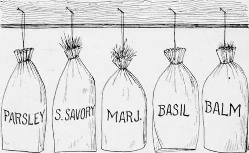
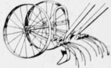

Drying And Storing
Description
This section is from the book "Culinary Herbs", by M. G. Kains. Also available from Amazon: Culinary Herbs, Their Cultivation, Harvesting, Curing and Uses.
Drying And Storing
When only a small quantity of an herb is to be dried, the old plan of hanging loose bunches from the ceiling of a warm, dry attic or a kitchen will answer. Better, perhaps, is the use of trays covered with clean, stout manilla paper upon which thin layers of the leaves are spread. These are placed either in hot sunlight or in the warm kitchen where warm air circulates freely. They must be turned once a day until all the moisture has been evaporated from the leaves and the softer, more delicate parts have become crisp. Then they may be crunched and crumbled between the hands, the stalks and the hard parts rejected and the powder placed in airtight glass or earthenware jars or metal cans, and stored in a cool place. If there be the slightest trace of moisture in the powder, it should be still further dried to insure against mold. Prior to any drying process the cut leaves and stems should be thoroughly washed, to get rid of any trace of dirt. Before being dried as noted above, the water should all be allowed to evaporate. Evaporation may be hastened by exposing the herbs to a breeze in a shallow, loose basket, a wire tray or upon a table. While damp there is little danger of their being blown away. As they dry, however, the current of air should be more gentle.
The practice of storing powdered herbs in paper or pasteboard packages is bad, since the delicate oils readily diffuse through the paper and sooner or later the material becomes as valueless for flavoring purposes as ordinary hay or straw. This loss of flavor is particularly noticeable with sage, which is one of the easiest herbs to spoil by bad management. Even when kept in air-tight glass or tin receptacles, as recommended, it generally becomes useless before the end of two years.
When large quantities of herbs are to be cured a fruit evaporator may be employed, the herbs being spread thinly upon wire-bottomed trays so that an ample current of air may pass through them. Care must be taken to keep the temperature inside the machine below [20 degrees. The greatest efficiency can be secured by placing the trays of most recently gathered herbs at the top. the partially dried ones being lowered to positions nearer the source of heat. In this way the fresh, dry, warm air comes in contact first with the herbs most nearly dried, removes the last vestige of moisture from them and after passing through the intervening trays comes to those most recently gathered.
Paper Sacks of Dried Herbs for Home Use
Unless the evaporator be fitted with some mechanism which will permit all the trays to be lowered simultaneously, the work of changing the trays may seem too irksome to be warranted. But where no changes of trays are made, greater care must be given to the bottom trays because they will dry out faster than those at the top. Indeed in such cases, after the apparatus is full, it becomes almost essential to move the trays lower, because if fresh green herbs, particularly those which are somewhat wet, be placed at the bottom of the series, the air will become so charged with moisture from them that the upper layers may for a time actually absorb this moisture and thus take longer to dry. Besides this, they will surely lose some of their flavoring ingredients-the very things which it is desired to save.
No effort should be made to hasten the drying process by increasing the temperature, since this is likely to result as just mentioned. A personal experience may teach the reader a lesson. I once had a large amount of parsley to cure and thought to expedite matters by using the oven of a gas stove. Suffice it to tell that the whole quantity was ruined, not a pinch was saved. In spite of the closest regulation the heat grew too great and the flavor was literally cooked out of the leaves. The delicate oil saturated everything in the house, and for a week or more the whole place smelled as if chicken fricassee was being made upon a wholesale plan.
Hand Cultivator and Scarifier
Except as garnishes, herbs are probably more frequently used in a dry state than in all other ways put together. Perhaps this is because the method of preparing them seems simpler than that of infusion, because large quantities may be kept in small spaces, and because they can be used for every purpose that the fresh plants or the decoctions can be employed. In general, however, they are called into requisition principally in dressings, soups, stews and sauces in which their particles are not considered objectionable. If clear sauces or soups are desired, the dried herbs may still be used to impart the flavor, their particles being removed by straining.
The method of preparing dill, anise, caraway and other herbs whose seed is used, differs from that employed with the foliage herbs mainly in the ripeness of the plants. These must be gathered as soon as they show signs of maturity but before the seeds are ready to drop from them. In all this work especial care must be paid to the details of cleaning. For a pleasing appearance the seed heads must be gathered before they become the least bit weather-beaten. This is as essential as to have the seed ripe. Next, the seed must be perfectly clean, free from chaff, bits of broken stems and other debris. Much depends upon the manner of handling as well as upon harvesting. Care must be taken in threshing to avoid bruising the seeds, particularly the oily ones, by pounding too hard or by tramping upon them. Threshing should never be done in damp weather; always when the air is very dry.
In clear weather after the dew has disappeared the approximately ripe plants or seed heads must be harvested and spread thinly-never packed firmly- upon stout cloth such as ticking, sailcloth, or factory cotton. A warm, open shed where the air circulates freely is an admirable place, since the natural temperature of the air is sufficient in the case of seeds to bring about good results. Usually in less than a week the tops will have become dry enough to be beaten out with a light flail or a rod. In this operation great care must be taken to avoid bruising or otherwise injuring the seed. The beating should therefore be done in a sheet spread upon a lawn or at least upon short grass. The force of the blows will thus be lessened and bruising avoided.
For cleaning herb seeds sieves in all sizes from No. 2 to No. 40 are needed. The sizes represent various finenesses of mesh. All above No. 8 should be of brass wire, because brass is considerably more durable and less likely to rust than iron. The cloths upon which the herbs are spread should be as large as the floor upon which the threshing is to be done except when the floor is without cracks, but it is more convenient to use cloths always, because they facilitate handling and temporary storing. Light cotton duck is perhaps best, but the weave must be close. A convenient size is 10 x 10 feet.
After the stalks have been removed the seed should be allowed to remain for several days longer in a very thin layer-the thinner the better-and turned every day to remove the last vestige of moisture. It will be even better still to have the drying sheet suspended so air may circulate below as well as above the seed. Not less than a week for the smallest seeds and double that time for the larger ones is necessary. To avoid loss or injury it is imperative that the seed be dry before it is put in the storage packages. Of course, if infusions are to be made all this is unnecessary; the seed may be put in the liquor as soon as the broken stems, etc., are removed subsequent to threshing.
Continue to: